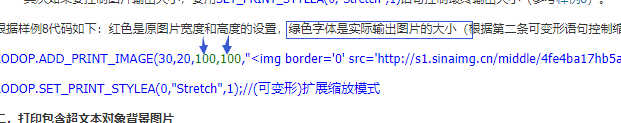
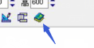

【非常见问题杂笔记】获取状态码，高级顶级未来功能等
1.拿到打印状态之后凋自己的方法怎么不执行呢先打印，再获取状态码。
c-lodop回调是异步的。
调用的是哪个函数的返回值，需要动作函数触发回调。
参考样例45，右键查看源码，对照样例排查下，是判断打印成功的状态码吗，参考样例45的13，这个需要测试打印机是否支持，也可以判断job不在队列为成功。
回调的是某个函数的值，需要有个有返回值的函数。
参考样例45的写法，如果要获取状态码，需要先获取job代码，再根据job代码获取状态码。
或参考样例4，35，判断加入队列算成功。
是想获取状态码吗。仔细参考样例源码，对照样例排查，job代码和状态码都需要用会回调，先获取了job代码，才能再回去状态码
或建议样例4,那种，直接加入队列算成功。
对照样例排查，先获取job代码，再根据job代码获取状态码。
2.同一台电脑切换两台不同的打印机，一台打印正常，一台打印格式有问题
同一台电脑，不同的打印机吗
是样式问题，还是偏移问题。
两个打印机进入预览查看下效果，有的打印机不支持自定义纸张，或有可打区域。
3.公司高级，购买lodop授权了，未来lodop升级了新功能，我们也能享有这些功能的使用权是吧
公司高级对购买时候的功能有效，之后版本也有有效。
顶级注册支持未来功能。限Windows平台使用。
公司高级不支持如去pdf弹窗等功能，不支持未来功能。
控件注册号 注意事项 最新价格表、购买方式和使用方法见(官网)：
http://www.c-lodop.com/Lodop_Lic.html
公司高级不支持如去pdf弹窗等功能，不支持未来功能。
具体可看价格表
顶级注册支持未来的新增功能。
高级注册不支持对未来功能，对后续版本有效，对当前支持的高级功能有效，具体可看价格表的介绍。
4.第一个文本框内容超出山了， 我没有要求他换行显示，但还是自动换行了，怎么办，有什么办法要求他不换行
减小打印项高度，纯文本会隐藏超宽后后面的内容。
5.照片显示不出来
（1）查看lodop内部解析的html信息，见http://www.c-lodop.com/faq/pp8.html
查看一下传入的图片路径是否正确，尽量用绝对路径地址，换个图片试试。
（2）显示空白或者图片缺失等问题，加延迟试试：
LODOP.SET_PRINT_STYLEA(0,"HtmWaitMilSecs",1000)//设置上一项延迟超文本下载1000毫秒
（3）权限问题，图片显示叉号 说明服务端拒绝了 可能证书 session等问题，导致没有直接访问该图片的权限，有些需要验证之后才能访问图片。由于Lodop借用IE下载引擎，与非IE浏览器之间目前不能传递Session(cookies)
（4）清空ie缓存 重置ie 后在ie中查看下。IE中的URL最大长度限制为2048字节。超过这个长度会不支持。
（5） 查看服务器端错误日志排查下 。
（6）做个简单的例子验证下，排除其他因素的干扰。Base64输出图片参考样例38。
由于Lodop借用IE下载引擎，与非IE浏览器之间目前不能传递Session(cookies)
用能直接能访问的地址。
用直接能访问的地址，不需要经过验证的那种。
Lodop是基于本机windows底层引擎进行渲染解析的，与ie调用的引擎一致。
图片建议用能直接访问的地址，不经过验证的那种。
是页面丢失session吗，lodop不会对页面控制。
都用c-lodop测试下http://www.c-lodop.com/faq/pp34.html
不用重定向，用的windows底层内核解析。
用IE能直接访问的地址，排查服务器端和客户端之前是否有重定向地址。
只能自己排查下，图片和服务器传输等。
用能直接访问的地址，不需要验证，或二次访问服务器的那种。
如果小图片可以显示，可能和图片大小等有关，或浏览器缓存图片有关，测试对比下试试。
需要能直接访问的地址。
带参数之类的，图片等会和服务器交互。
尽量用直接的地址。
比如样例的这种地址http://www.c-lodop.com/demolist/PrintSample37.png
没有很好的版本，lodop本身没有解析超文本的引擎，调用的系统的底层引擎，可能和浏览器和图片访问之间的缓存等问题。
尽量用直接访问的地址。
6.安装新的版本 证书问题
直接访问https://localhost.lodop.net:8443测试下。
点高级，继续访问试试。
用的版本是多少，用4104测试下。
用其他浏览器测试下，这个浏览器访问其他https网站是否正常。
用的c-lodop是否是4104。
测试这个浏览器访问其他https网站是否正常。
其他网站也显示不安全，可能和这个浏览器有关，用其他浏览器测试下。
7.lodop是否和最新版的shiro不兼容？
lodop和c-lodop是用前台的JS控制的。shiro是框架吗
lodop和c-lodop是用前台的JS控制的，可以先把数据传到前台，由前台传参数给lodop或c-lodop
可以用默认选项，点下一步。
8.AO打印HTTPS 报不安全
https的C-Lodop如何使用 参考http://www.c-lodop.com/faq/pp32.html
https的C-Lodop如何使用 参考http://www.c-lodop.com/faq/pp32.html
AO打印，需要在云主机那里添加自己网站的证书
三种角色及使用方法：
参考http://www.c-lodop.com/demolist/t1.html
是第一种本地打印角色，还是第三种AO打印角色。
先确定下角色是哪个，https://localhost.lodop.net:8443那个是本地的证书
https的C-Lodop如何使用 参考http://www.c-lodop.com/faq/pp32.html
https的C-Lodop如何使用 参考http://www.c-lodop.com/faq/pp32.html
第三种角色可以根据链接里在云主机添加自己的证书
9.普通打印机会显示异常结束，针式打印机可以正常打印
打印的时候需要把普通打印机的设置改成手动送纸，打印纸张大小改成对应的，就能打印了。（客户反馈的某打印机的设置方法）
10.跳过打印预览界面
直接打印，参考样例3等，http://www.c-lodop.com/demolist/PrintSample3.html
PRINT或PRINTA输出
直接打印，参考样例3等，样例右键，查看源码http://www.c-lodop.com/demolist/PrintSample3.html
PRINT或PRINTA输出
11.能帮我查一下我们公司买的授权是什么版本的吗？
发一下注册日期，和收注册号的邮箱，这边查一下。
如果是公司名注册，发一下公司名，这边也可以查一下试试。
发一下公司名
查到了，公司高级注册
参考http://www.c-lodop.com/demolist/t1.html
参考链接里的三种角色及使用方法。
参考：关于购买梦泰尔软件授权的注意事项
http://www.c-lodop.com/Lodop_note.html
不是后两种角色不需要购买c-lodop注册号。
这个公司名的注册号是针对第一种角色的，对c-lodop本地角色默认有效。
第一种角色没有打印限制。
这个是针对后两种角色扩充访问端的。
和注册无关，
参考http://www.c-lodop.com/faq/pp5.html
排查开机启动项，用管理员权限安装最新版http://www.c-lodop.com/download.html，右键以管理员权限运行，再对比试试。
排查c-lodop是否能开机自启动，默认情况c-lodop是开机自动启动的，没自动开启可能问题：
1. 在系统msconfig启动选项列查看c-lodop是否是开启自启动；
2. 当前操作用户权限不足，无系统管理员权限；
3. 注意安全软件禁用c-lodop. 目前常用的360及金山已进行了安全认证，其他的杀毒软件请加入白名单，或直接上报提交对应的杀毒软件服务器。
出问题的时候访问下http://localhost:8000/c_sysmessage，查看本机c-lodop的出错信息
用最新版测试下，安装时以管理员权限运行，http://www.c-lodop.com/download.html
c-lodop重启后正常，可能和c-lodop运行等有关，需要查看下报错信息http://localhost:8000/c_sysmessage
12.lodop 服务端有做过性能测试吗？支持的并发量是多少
是JS控制的，一个个任务发送。
打印过慢，可能和很多原因有关：打印内容或样式或图片等过多，有需要下载有脚步执行或本身网络慢；
机器性能过低 系统ie有问题或缓存过多；或使用的是共享打印机。
如果预览页数多，可以多分一些任务，太多不建议预览，建议直接打印，在任务和页数之间平衡一下，参考样例26
http://www.c-lodop.com/demolist/PrintSample26.html
13.整体只能设置字体大小？Arial每台电脑都有的字体，字体无效
字体大小，样式等都可以设置，参考lodop技术手册SET_PRINT_STYLE篇
设置无效吗，发一下这个语句，这边测试下。
LODOP.SET_PRINT_STYLE("FontName","Arial");
LODOP.ADD_PRINT_TEXT(42,47,100,36,"新加文本1");
这边测试是正常的
可先把打印预览或打印改成打印设计，选中该纯文本打印项，查看当前的纯文本字体是哪个。
这个是打印设计返回的代码，
会是一个打印项，跟着一个SET_PRINT_STYLEA(0的这种格式的。0代表紧跟着的的打印项。
打印设计返回的代码会是这种格式。每个的打印项后面跟着自己的样式。
LODOP.ADD_PRINT_TEXT(42,47,100,36,"新加文本1");
LODOP.SET_PRINT_STYLEA(0,"FontName","Arial");
打印设计自动返回的是这种格式的，打印设计是给开发人员辅助设计的，
设计好后，也可以自己修改代码，复制或保存自己的代码。
打印设计右键属性里查看下，是否修改了单位
单位换算http://www.c-lodop.com/demolist/PrintSample29.htmlbr>
打印设计是辅助设计的，可以根据设计返回的代码再进行修改。
可以根据返回的代码再自己修改。
打印设计是给开发人员辅助设计模版的。
14.1.用户比较多的情况下lodop 的服务端性能，2.1000页时(我们自己进行合并),直接打印没预览，这种情况服务端压力会不会变大
三种角色及使用方法：
参考http://www.c-lodop.com/demolist/t1.html
第一种角色客户访问的是自己本地的c-lodop，只和自己本地有关。
其他用户访问的也是自己本地的c-lodop。
1000页一个任务较大，建议分成多任务，参考样例26。
15.设计页面跟实际结果页面差距也太大了，调整很不方便，改一下看一下
打印设计是辅助设计的，只能这样，设计后预览观察效果。
直到模版修改完成。
打印设计本身有预览按钮，可以设计再预览。
只能是置顶效果。
有一种内嵌，可以打印设计不关闭，不是置顶窗口
http://www.c-lodop.com/demolist/PrintSample36.html
参考http://www.c-lodop.com/faq/pp21.html
高版本的火狐谷歌不再支持np插件方式，只能用c-lodop，c-lodop不支持内嵌。
可以在ie等支持np插件的浏览器下查看官网的需要内嵌的样例效果。
样例36这种内嵌只能在插件方式下时使用，可以在IE等浏览器查看样例效果。
不能，只能是置顶状态。
样例36那种，直接在页面上内嵌，不是窗口。
参考http://www.c-lodop.com/faq/pp21.html
高版本的火狐谷歌不再支持np插件方式，只能用c-lodop，c-lodop不支持内嵌。
可以在ie等支持np插件的浏览器下查看官网的需要内嵌的样例效果。
样例36这种内嵌只能在插件方式下时使用，可以在IE等浏览器查看样例效果。
是官网的样例36吗http://www.c-lodop.com/demolist/PrintSample36.html
官网样例是混合部署，ie会走lodop插件方式。
样例36这种内嵌只能在插件方式下时使用。c-lodop只能是弹出的形式。
官网的样例是混合部署，36，http://www.c-lodop.com/demolist/PrintSample36.html
可以直接测试样例。
或下载发行包，下载中心发行包里lododpFuncs.js默认是混合部署。
16.lodop可以调用腕带打印机吗？
获取的是安装到windows打印机列表的打印机。
只要是能安装到windows打印机列表的打印机都可以。
可以测试下样例5,7能否获取到，http://www.c-lodop.com/demolist/PrintSample7.html
支持xp系统 。
只要是能安装到windows打印机列表的打印机都可以。
可以测试下样例5,7能否获取到，http://www.c-lodop.com/demolist/PrintSample7.html
是官网的样例36吗http://www.c-lodop.com/demolist/PrintSample36.html
官网样例是混合部署，ie会走lodop插件方式
16.LODOP.ADD_PRINT_TEXT 在这个属性里面对某两个字加下划线可以吗
例如，下划线写法 参考lodop技术手册 LODOP.ADD_PRINT_TEXT(96,74,100,20,"新加文本1");
LODOP.SET_PRINT_STYLEA(0,"Underline",1);
对整个打印项的。
不能对纯文本打印项中的部分文字加单独样式。
17.在安装linux版时报错括号错误，syntax error:"(" unexpected,应该怎么解决
用root登录系统界面试试
如果是64位系统 更新下面的试试
sudo dpkg --add-architecture i386
sudo apt-get update
sudo apt-get install libc6:i386 libncurses5:i386 libstdc++6:i386
sudo apt-get install libgtk2.0-0:i386 libcanberra-gtk-module:i386 gtk2-engines-pixbuf:i386
gtk2-engines-murrine:i386
apt-get install libatk-adaptor:i386 libgail-common:i386
在linux桌面，双击lodop文件也会安装
运行 install.sh 或者 直接在ui界面双击lodop
(安装linux版时报错，电脑操作系统，国产的统信uos操作系统。另一个人反馈的银河麒麟版本 v4.0)
Kylin V10，银河麒麟v10,是正常的.
18.打印性能问题
性能和很多原因有关，需要实际测试下。
批量打印，分页分任务，参考样例26，根据自己的打印内容任务等平衡下。
19.浏览器获取不到打印机列表是啥问题，就那一个不行，是哪里设置的问题吗
选择打印机，测试参考样例5、7
http://www.c-lodop.com/demolist/PrintSample5.html
http://www.c-lodop.com/demolist/PrintSample7.html
访问下http://[C-Lodop服务所在主机ip或域名]:[C-Lodop端口]欢迎页面试试
在有问题的电脑上访问欢迎页面试试
截图一下输入的地方，LIC id是什么
参考：关于购买梦泰尔软件授权的注意事项
http://www.c-lodop.com/Lodop_note.html
买的是哪个注册号
三种角色及使用方法：
参考http://www.c-lodop.com/demolist/t1.html
后两种角色需要购买c-lodop注册号扩充访问端。
发一下注册日期和收注册号的邮箱，这边查一下试试。
可以试试，如果不是公司名注册，可能查不到。
稍等，这边试试。
查到了，公司名称注册。
控件注册号 注意事项 最新价格表、购买方式和使用方法见(官网)：
http://www.c-lodop.com/Lodop_Lic.html
公司名称注册适合第一种角色，对第一种角色客户数量无限制。
参考http://www.c-lodop.com/demolist/t1.html
后两种角色需要购买c-lodop注册号扩充访问端。这个绑定的是云主机硬件。
第一种角色没有客户访问数量限制。
后两种角色5个以内免费，多于5个需要购买c-lodop注册号扩充访问端，这个绑定云主机机器硬件。
是累计的，ip地址计入一个算一个。
重启c-lodop会重新计数。
这个是绑定机器硬件的，一台机器一注册，绑定那台云主机，
这个地址里有价格表（图示）
（整理下问答分类，因为最近问的少，所以导致问答在自己总结的比较靠下的位置，且购买链接也难以一下子在问答找出来）
20.孔打印，怎么校准呢，有些机器识别会出问题。
校准和打印机有关，咨询下打印机客服。
或针对该客户端整体偏移
参考http://www.lodop.net/faq/pp17.html
用打印维护针对该客户端进行调整，调整结果在客户端本地，只针对该客户端有影响。
21.如何进入打印维护
参考http://www.c-lodop.com/faq/pp9.html
参考http://www.c-lodop.com/demolist/PrintSample21.html
22.打印pdf，一千页，这个打印机制，是调用PRINT 方法时会调用lodop 的服务端，还是直接将文件传输给打印机了？
客户端本地打印角色，c-lodop是本地服务，直接在客户端本地打印，传给本地的windows打印服务，发给打印机队列。
一个pdf一千页可能太大，可以拆分该pdf，分页分任务输出，参考样例26.
三种角色及使用方法：
参考http://www.c-lodop.com/demolist/t1.html
是第一种角色吗
角色和自己的应用场景有关，客户是否是访问网站后在自己的电脑上进行打印。
样例这种http://www.c-lodop.com/LodopDemo.html
就是第一种角色。
是客户端本地打印角色，访问的是客户端本地的c-lodop。
是第一种角色，不会有其他用户发任务到这个电脑上打印。
这种是在客户端本地进行的。
第一种角色，每个客户端都需要安装。
服务器端不安装，引用lodopFuncs.js，提示客户端下载安装。
参考http://www.c-lodop.com/faq/pp34.html
目前只有c-lodop支持pdf打印，单独使用c-lodop本地打印角色。
是http网站，还是https的
根据自己的网站，如果是http的，直接用默认的这个就行，
如果自己的网站是https的，https扩展版C-Lodop如何使用 参考http://www.c-lodop.com/faq/pp32.html
参考http://www.c-lodop.com/faq/pp34.html
目前只有c-lodop支持pdf打印，单独使用c-lodop本地打印角色。
官网样例那种是混合部署，ie等浏览器会走插件方式，但是插件方式不支持Pdf打印，所以都改成用c-lodop的。
c-lodop是个本地服务
云打印C-Lodop到底是个啥东东？参考http://www.c-lodop.com/blogs/Blog018.html
需要实际测试下。批量打印大量的时候，也与机器性能等有关。
三种角色及使用方法：
参考http://www.c-lodop.com/demolist/t1.html
客户端本地打印必须在客户端本地安装，第一种角色，后两种不是打印到本机的。
23.官网样例43的demo是咋样实现的
样例右键，可查看源码
并结合lodop技术手册http://www.c-lodop.com/download.html
24.pdf，需要高级会员才能打吗
可以打印，不是顶级注册会有个弹窗，提示去掉需顶级注册
去掉pdf打印的弹窗，只能顶级注册。可以域名顶级或公司名顶级。
25.LODOP.PRINT_INITA 与LODOP.PRINT_INIT的区别是什么呢？
参考lodop技术手册http://www.c-lodop.com/download.html
都可以，根据需要使用，inita的参数较多，还可以控制整体偏移和打印设计的可视化编辑区域。
所有内容都偏移，比如都向左多少，向上多少等。可以实际测试下，不建议在代码里直接设置。
可以用根据打印机用打印维护针对客户端进行整体偏移。
26.缩放之后，页面偏左了
根据比例缩放，参考http://www.c-lodop.com/demolist/PrintSample42.html
或选择其他缩放方式。如整页缩放，整宽缩放。
并排查超文本内部是否有边距。
27.未就绪 参照哪，打印未就绪
发一下截图
是打印机的提示吗，截图下提示。
如果是打印机提示，咨询下打印机客服。
参考http://www.c-lodop.com/faq/pp3.html
28.这个AO端桥，是不是连接打印机的客户端那台电脑都得装一下。
是的。
参考http://www.c-lodop.com/blogs/Blog014.html
可以实际测试下，目前有客户用到过600多个端桥，一千个应该是可以的。
可以多个云主机。
是指每个云主机连接的端桥吗，是的可以自己控制
参考链接，端桥指向云主机地址，如果多个云主机，指向不同的地址。
可用AOListCount自定，显示链接端桥的个数。
在这个参数里（图示）
是指端桥的个数。
某个云主机的链接的端桥的个数。
端桥下的打印机不限制。
不是限制链接的个数，是显示在列表里的个数。
http://www.c-lodop.com/blogs/Blog013.html
这种需要特殊的AO打印机，不用端桥。
普通打印机只能用端桥方式。
29.打印二维码的时候，预览有，但是打印的时候没有
用虚拟打印机输出测试下
是lodop语句输出的二维码吗，样例11这种
样例11 http://www.c-lodop.com/demolist/PrintSample11.html
预览和打印看起来不是一个任务，虚拟打印机打印的内容比预览的内容多，内容也不同。
用和打印的同一个任务，进入lodop的打印预览查看下效果。
30.JS报错，Refused to load the script XXXX because it violates the following Content Security Policy，Note that 'script-src' was not explicitly set, so XXXXX is used as a fallback.
参考https://stackoverflow.com/questions/31211359/refused-to-load-the-script-because-it-violates-the-following-content-security-po
参考https://segmentfault.com/q/1010000010001342
<meta http-equiv="Content-Security-Policy" content="script-src 'self' https://localhost.lodop.net/"/>
<meta http-equiv="Content-Security-Policy" content="script-src 'unsafe-inline' https://localhost.lodop.net"/> 试下
<meta http-equiv="Content-Security-Policy" content="default-src *; script-src 'self' https://localhost.lodop.net 'unsafe-inline' 'unsafe-eval'"/>
<meta http-equiv="Content-Security-Policy" content="default-src *;
style-src 'self' http://* 'unsafe-inline';
img-src 'self' http://* data 'unsafe-inline';
script-src 'self' https://localhost.lodop.net 'unsafe-inline' 'unsafe-eval'"
/>
升级下chrome到最新版 重置下配置
（免费群里的一个提问的，其他人的回答，第一次见这个问题，记录下）
31.同个标签，为什么不同电脑预览或打印内容会不一样？
打印项是什么语句输出的，是add_print_text纯文本，还是add_print_htm超文本
用虚拟打印机输出测试下，先排除下打印机的影响。
有的打印机不支持自定义纸张或可打区域，导致受容器影响的样式变形。
参考 http://www.c-lodop.com/demolist/PrintSample6.html
如想文本内容行左右对齐（允许标点溢出，且英文单词拆开）可用如下语句：
SET_PRINT_STYLEA(0,"TextNeatRow",true);
设置这个允许标点溢出，且英文单词拆开试试。
此外用虚拟打印机测试下，虚拟打印机支持自定义纸张，且无可打区域，排查是否是纸张宽度会可打区域宽度导致的换行。
只要传入的是需要的内容就行。
是想短线不换行吗 ，拆开英文单词吗
参考 http://www.c-lodop.com/demolist/PrintSample6.html
如想文本内容行左右对齐（允许标点溢出，且英文单词拆开）可用如下语句：
SET_PRINT_STYLEA(0,"TextNeatRow",true);
32.套打后会创建一个新的cookie
由于Lodop借用IE下载引擎，与非IE浏览器之间目前不能传递Session(Cookies)，所以需要安全验证的页面不要用URL方式打印，要用页面已经下载好的内容的HTM方式打印，也就是ADD_PRINT_HTM或ADD_PRINT_TABLE等语句
另外URL方式需要二次访问服务器，理论上存在下载失败的可能，所以专业的管理系统尽量不要用URL方式。
专业的管理系统尽量不要用URL方式
建议打印组织好的内容。
打印设计和定位套打 参考http://www.c-lodop.com/demolist/PrintSample4.html
手把手教你WEB套打程序开发 参考http://www.c-lodop.com/blogs/Blog008.html
返回设计的JS代码 参考样例35 http://www.lodop.net.cn/demolist/PrintSample35.html
文档式模版生成和使用 参考样例50 http://www.lodop.net.cn/demolist/PrintSample50.html
33.C#如何调用
如果是CS架构的
C#:
首先添加引用文件：CAOSOFT_WEB_PRINT_lodop.ocx
Lodop.LodopXClass MyLodop = new Lodop.LodopXClass();
MyLodop.ADD_PRINT_TEXT(10,10,100,20,"新加文本1");
MyLodop.PREVIEW();
=================================
C# ：引用CAOSOFT_WEB_PRINT_lodop.ocx
在C:\Program Files (x86)\MountTaiSoftware\Lodop
引用后会有ILodopX接口、ILodopXEvents接口，LodopX接口，LodopXClass类。
Lodop.LodopX PRLodop = new LodopX();
PRLodop.ADD_PRINT_TEXT(10, 10, 100, 20, "一个文本项");
PRLodop.SET_PRINT_STYLEA(0, "FontSize", 13.5);
PRLodop.SET_PRINT_STYLEA(0, "Bold", 1);
PRLodop.PREVIEW();
}
一些客户反馈的调用方法，您参考摸索一下
34.这图片怎么让它居中，最好可以放大
参考样例23 http://www.c-lodop.com/demolist/PrintSample23.html
除了设置打印项居中，还要确保打印项内容相对于打印项宽度居中。
缩放图片 参考http://www.c-lodop.com/faq/pp14.html

缩放的到宽高可以是这个。
是指图片显示在html上层吗，后输出的打印项在上层，可以后输出图片。
如果是指图片本身是在html里的 ，只能用css样式等控制超文本的内部样式。
直接输出图片，参考样例8http://www.c-lodop.com/demolist/PrintSample8.html
样例8演示了图片和图片缩放。
参考lodop技术手册http://www.c-lodop.com/download.html
加了缩放语句后，会缩放到参数3,4宽高。
35.lodop能实现虚拟打印成PDF格式保存到指定的位置吗?
弹出保存框是虚拟打印机的功能，可以百度下是否有能设置默认路径的pdf虚拟打印机。
36.提示“网页还没下载完毕，请稍等一下再操作.”
参考http://www.c-lodop.com/faq/pp3.html 新版修改了该提示，是同一问题，参考链接里的方法。
参考http://www.c-lodop.com/faq/pp3.html 新版修改了该提示，是同一问题，参考链接里的方法。
如果是页面点击后打印，把获取LODOP对象放在打印按钮里触发。参考样例2
http://www.c-lodop.com/demolist/PrintSample2.html
如果是需要一进入页面就进行打印，不需要点击页面的按钮等触发，可参考链接里的处理方法，加延迟或等c-lodop加载完再调用。
36.提示“getLodop出错，LODOP.set_lices...is not define，方法没定义”
测试官网样例http://www.c-lodop.com/demolist/PrintSample2.html
如果样例正常，样例页面右键查看源码 ，参考样例的使用方法。
加的位置不对，先获取LODOP对象，再加这句。
可以用写在每个打印方法里，每次打印的时候都要执行，也可以放在链接里的LodopFuncs.js标注处，每次调用LODOP的时候统一调用。
参考样例源码，LODOP=getLodop(); 这句是获取LODOP对象，获取后可以用lodop的方法。
可以用写在每个打印方法里，每次打印的时候都要执行，也可以放在链接里的LodopFuncs.js标注处统一调用。LodopFuncs.js下方有个标注。
(图示）
36.安装时提示：拒绝访问，中止，重试，忽略”
重启电脑后，重新安装试试，重启电脑后以管理员权限安装。
重启电脑了吗，重启电脑测试下。
再重启下试试，重启后不要开其他应用，直接右键以管理员权限安装c-lodop试试。
安装的版本是多少，重启后安装最新版4104测试下。
安装4104试试，并查看下当前是否是管理员。
37.打印图片丢session，还有没有别的方式添加图片
参考样例38，可以输出不加img标签的，直接输出base64码，这种不经过浏览器解析，不受浏览器引擎解析的影响。
http://www.c-lodop.com/demolist/PrintSample38.html
lodop本身没有解析超文本的引擎，所以超文本受本机调用的解析引擎的影响，Lodop是基于本机windows底层引擎进行渲染解析的，与ie调用的引擎一致。
38.使用64位系统开发标签软件，驱动也是64位的，如果换了台电脑，换成32位，有影响吗
不影响，32位c-lodop支持32和64位操作系统
39.点击预览之后，预览里面有一个打印按钮，我点击打印，怎么知道打印是否成功？
参考样例35 http://www.c-lodop.com/demolist/PrintSample35.html
打印维护和打印预览返回打印次数，大于0表示打印成功的次数；
40.32位系统，有一台这样的机器，使用的是printa，调用之后没什么反应
在该机器，测试下样例4http://www.c-lodop.com/demolist/PrintSample4.html
点击样例4里的选择打印。
并安装最新版4104测试下。
在发行包里有32位版的c-lodop4104
http://www.c-lodop.com/download.html
安装c-lodop时不要勾选服务器端工作模式，直接用安装文件自带的选项就行。
安装c-lodop时不要勾选服务器端工作模式，直接用安装文件自带的默认选项就行。
在该有问题的机器，测试下样例4http://www.c-lodop.com/demolist/PrintSample4.html测试样例4是否正常。
可以下载发行包，直接运行发行包里的本地样例测试。
http://www.c-lodop.com/download.html
41.有打印是否成功的回调吗
参考样例35 http://www.c-lodop.com/demolist/PrintSample35.html
样例45的13 http://www.c-lodop.com/demolist/PrintSample45.html
样例35返回的“打印成功”实际仅是成功加入后台队列。
样例45的13 判断“JOB不在队列”就足可认定已经打印成功。
一般建议使用样例4，35方法简单判断打印成功，发送打印指令加入打印机队列算打印成功。
c-lodop需要回调函数，参考c-lodop技术手册
和一些含有回调函数的官网样例的源码，样例右键，查看源码，例如样例35
http://www.c-lodop.com/demolist/PrintSample35.html 样例4，样例35等等。
参考样例4源码，如果是混合部署，可以加判断，如果是单独c-lodop，可以直接回调。
42.检查注册是否有效，不是看打印维护是否有关于吗 我在样例里面打开也没看到有呢
这个是打印设计或维护的关于按钮

是指http://www.c-lodop.com/LodopDemo.html这个的样例吗，这个有域名注册号，所以没有关于按钮。
43.批量打印的时候，LODOP.ADD_PRINT_HTM，会有漏打的情况，比如一次打印100个商品，中间会有两三个，没有打印出来
是一个add_print_htm一个任务吗，分页语句在初始化外面，是无效的。
这个是循环多个任务。
批量打印，分页分任务，在页数和任务之间平衡一下，参考样例
26，http://www.c-lodop.com/demolist/PrintSample26.html
如果是漏任务，1.用最新版http://www.c-lodop.com/download.html
2.参考样例4http://www.c-lodop.com/demolist/PrintSample4.html
直接判断print的返回值，判断是否加入了队列。
44.lodop有没有办法检查电脑是否已经连接好打印机了
不支持，
或参考样例45http://www.c-lodop.com/demolist/PrintSample45.html
获取打印状态，需要实际测试下，不同打印机状态码可能不同。
或参考样例45，30秒或50秒不断获取状态，获取不到job不在队列为失败。说明任务一直在队列，可能是没连接好打印机，或打印机驱动问题等 ，也可能有其他打印失败可能。
45.用户使用的时候，只需要安装这两个其中一个就可以了吧，不需要安装第一个clodop吗
可以混合部署，也可以单独使用c-lodop.
混合部署：
官网样例http://www.c-lodop.com/LodopDemo.html
官网样例是混合部署LodopFuncs.js里已经写好了判断。
客户端是浏览器支持np插件，是32位浏览器，就会提示下载32位的Lodop插件：install_lodop32.exe
客户端浏览器支持np插件，是64位浏览器，就会提示下载64位的Lodop插件：install_lodop64.exe
客户端浏览器不支持np插件（判断如高版本谷歌火狐等），会提示下载C-Lodop方式： CLodop_Setup_for_Win32NT.exe
单独部署c-lodop:
单独c-lodop，http://www.c-lodop.com/faq/pp34.html
参考http://www.c-lodop.com/faq/pp21.html
高版本的火狐谷歌不再支持np插件，需要使用c-lodop，可参考官网样例混合部署http://www.c-lodop.com/LodopDemo.html
Lodop控件升级到C-Lodop云打印 参考http://www.c-lodop.com/faq/pp7.html
如果想所有浏览器都能用，需要用c-lodop。
46.打印二维码是哪个样例？
参考样例11 http://www.c-lodop.com/demolist/PrintSample11.html
lodop技术手册http://www.c-lodop.com/download.html，和样例11，右键查看源码
参考lodop技术手册参数的解释http://www.c-lodop.com/download.html
47.JS报错PRINT_INIT没定义
双击桌面上的c-lodop快捷方式，重启一下本机的c-lodop，重启c-lodop后刷新页面。
参考http://www.c-lodop.com/faq/pp5.html
排查开机启动项，用管理员权限安装最新版http://www.c-lodop.com/download.html，右键以管理员权限运行，再对比试试。
排查c-lodop是否能开机自启动，默认情况c-lodop是开机自动启动的，没自动开启可能问题：
1. 在系统msconfig启动选项列查看c-lodop是否是开启自启动；
2. 当前操作用户权限不足，无系统管理员权限；
3. 注意安全软件禁用c-lodop. 目前常用的360及金山已进行了安全认证，其他的杀毒软件请加入白名单，或直接上报提交对应的杀毒软件服务器。
默认是开机自启动的，重启c-lodop正常，可能是没开机启动的原因，参考上面 排查下